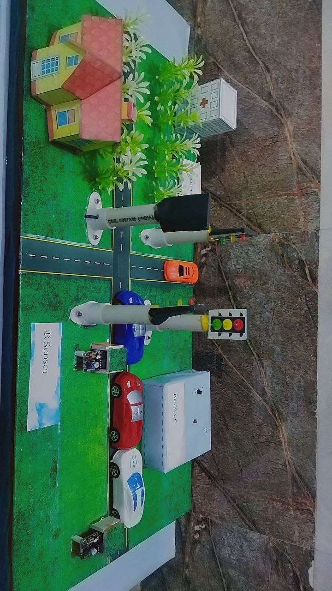
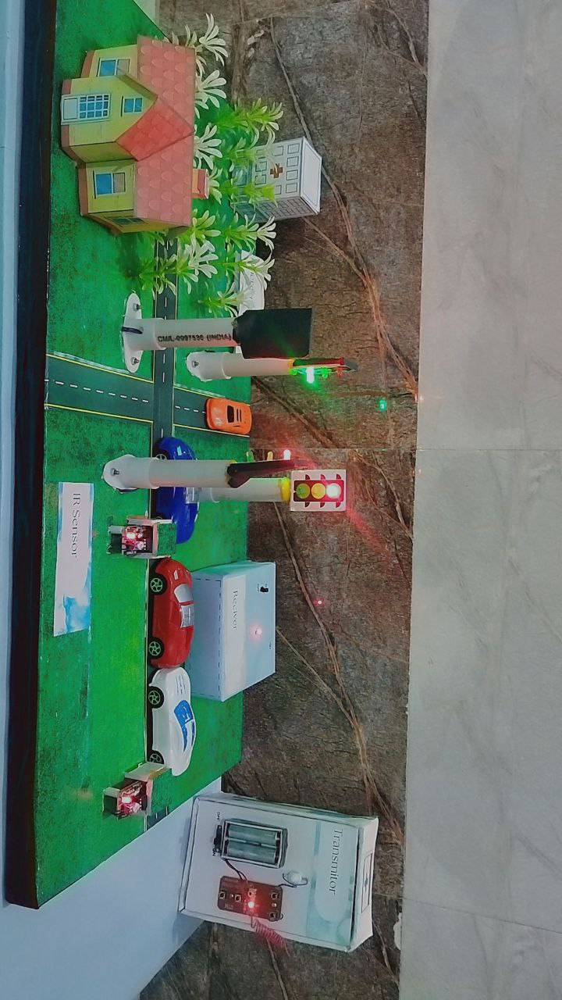

IoT-Based Smart Traffic Management System
An Arduino Uno powered intelligent traffic control model using IR sensors
for density detection, RF-based ambulance priority override,
and gas sensor-based fire detection system.
Key Features
- IR-based traffic density detection
- Dynamic signal timing adjustment
- RF-based emergency vehicle override
- Gas sensor fire alert mechanism
- Real moving vehicle simulation

